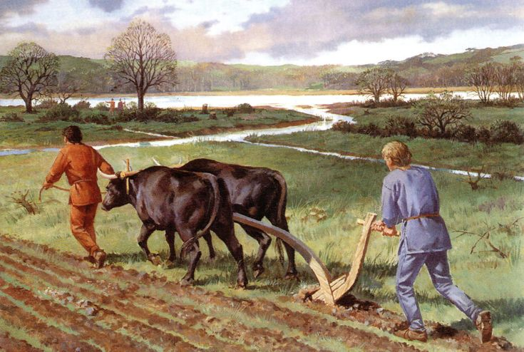
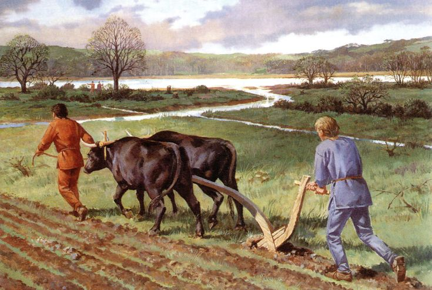

Ploughing (Nagula)
A Nagula is used to plough the land before paddy is cultivated. Ploughing loosens the soil facilitating good ventilation and water supply to the soil, while also destroying weeds and boosting microbial activity .Ancient and traditional farmers of Sri Lanka used different types of Nagulas - such as the Sinhala Nagula, Yakada (Iron) Nagula, and Kakulan Nagula - based on the formation of the land and pattern of cultivation. Sri Lankan farmers commonly used 'Sinhala Nagula’ for ploughing.
Structure of a Nagula
The handle of a Nagula is called
Nimun Kurulla or the
Nagul Atha. The handle is fixed to a grip called Nimun Mita. The Vakkote is the part of a Nagula that hollows the ground out. The Nagula is dragged along the ground by its stem, Pathakadaya which is tied to a wooden bar or yoke (Viyagaha) by a chord called an Amuthu Bana. The Viyagaha is placed on the neck of oxen. The Amuthu Bana is commonly made of deer or sambar deer skin, or from raw rind of a coconut shaft or rinds of trees such as Lihiniya or Nava. A ridge is made in the Viyagaha to grip the Nagula. A stick called Kewita is used to drive the working bovines (ox, cow, buffaloes) while ploughing.
පැරණි නගුල සහ විය ගස
ඇන වර්ග කිසිවක් භාවිතා නොකර ලී අගුල් මගින් තද කරගෙන ඇත. තලයටම රිවට්වූ කම්මල් උල් දෙකක් සහිත කුඩා වානේ තලය නගුලේ බිම හාරන කොටසට සවිකර ඇත. අත් කූරේ අගට හරක් අං කොටසක් ( උල සහිත අග කොටස ) සවිකර ඇත.
නගුල පිළිබඳ රොබට් නොක්ස් වාර්තා සටහන් මෙසේ දක්වයි.
නගුල වූකලී මිනිස් අතකට වඩා මදක් මහත්වූ දික් දන්ඩකින් හා උල් වූ එක්කොනක් බිම ඇනෙන අත් දන්ඩකින් යුතිතවූ උපකරණයකි. මෙම අත් දන්ඩෙහි වක්වූ තැන නගුලේ හිස පමණ පළල ඇති අගල් තූනක් හෝ හතරක් ගන කම් ඇති සවිමත් ලී කැබැල්ලක් සවිකොට ඇත්තේය නගුල නොගෙවී යනු පිණිස නගුලෙහි ලෝහමය තහඩුවක් සවිකොට ඇත. නගල අදින්නාවූ ගවයින් අදිනු ලබන්නේ විය දන්ඩෙනි.
මෙසේ සාදන ලද මේ නගුල් වර්ගය කන්ද උඩරටට සුදුසුය. සැහැල්ලු බැවින් කදුකරයේ පිහිටි පටු ලියදි හෑමට පිළිවන ඉදින් නගුල බර වැඩි උවහොත් මඩෙහි හැපී එරීයන බැවින් සීසෑම සාර්ථක නොවන්නේය. අපේ රටේ (එංගලන්තයේ ) නගුල් මෙන් මේවා වානෙන් වසාලීම අවශ්ය නොවේ යන්නයි.

 
